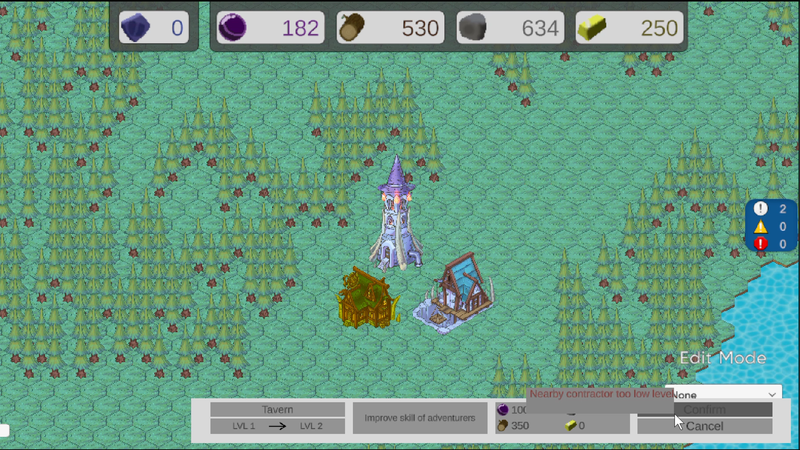
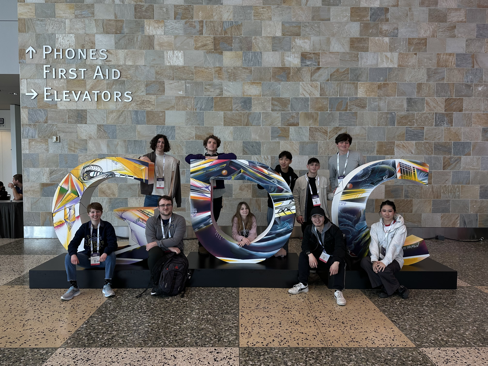

W25 Blog Post #4
Implemeting the UI required finding all the buildigs which were accesible to a contractor. To do this I searchand find all the towers within range of the contractor, then find the buildings within range of any of those towers.
Because there are so many reason why a player might not be able to upgrade a building, it is vital to communicate this well to the player. I created a mini tooltip which shows when hovering over the confirm when unable to upgrade. This also required changing portions of the Upgrade system to communicate with the return values why a building in not upgradeable.
In order to highlight th buildings accesible to upgrade within the upgrade menu, I am adding a new build mode for Upgrade alongside the existing Build, Delete, and None modes. Then this required adding the basic logic for highlighting the buildings savedby the currently selected contrator within the preview editor and handling building clicks correctly.
Getting the building and stats to properly upgrade on button click was simple, just requiring a function call to the existing upgrade system.
Like normal the meeting bagan with reviewing progress of each task. I talked with members of the art department about changing the current tileset for the ground to use tile rules with a formal tile set. Currently the ground tiles only use the custom tile derived from the regular tile, so the current systems will not work with the hexagon rule tiles. This is something I will need to fix in the future.
I was also told that figma allows you to copy and paste the exact design for the UI, so I will need to add the polished UI design for the upgrade UI in order to call this feature complete.
Members of the studio organized a meeting to the GDC. Out trip included attending imformative talks, networking, and team-building.
